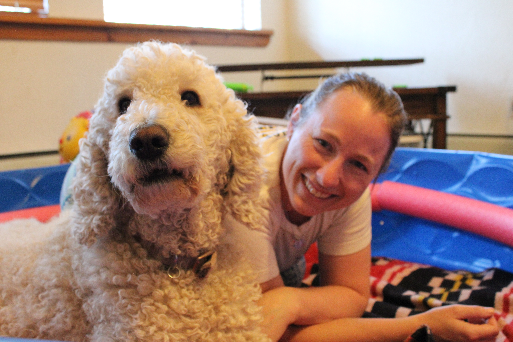

Raising wonderful companions since 2021
Raising wonderful companions since 2021
Healthy • Happy • Family Raised Goldendoodle Puppies
Hello, my name is Patricia
Owner and breeder at
Pat’s Poodle
Pups


I am a mom to five wonderful children. I love all things outside, but especially goats, gardening, and of course training and raising dogs! I find great joy in the nurture of all living things and am thankful to God that he has allowed me to participate in this circle of life.

Our Home
We are located on a "little piece of heaven" here on earth. Our puppies are raised beneath the blue skies and dramatic mountain peaks of Flagstaff, Arizona. We are a small family breeder located on over an acre of land in Flagstaff limits. Yes .... even in the cold of a Flagstaff winter, beauty is at hand. Our property gives our puppies the opportunity to run, romp, play, and splash in the clear, cool waters of Flagstaff's monsoon storms and snowy winters. Having so much freedom encourages our puppies to be socialized by humans and other animals, such as my goats and chickens, that play an important part in raising a well-rounded puppy.

Our Breeding Program
We produce only a few litters of puppies each year as we continue raising our five children and an ever-expanding family of Goldendoodles!
We wholeheartedly subscribe to the “quality trumps quantity” philosophy. It is our goal to produce amazing Goldendoodles that are eventually awesome dogs that are funny, intelligent, lively, loyal, have stunning looks, are eye-catching, and loving to their families. These Puppies excel at almost anything! Our puppies are born and raised in our home; we teach them to be an important family member from day one. Our dogs are never caged! Throughout the day, in a safe place alongside their momma, the puppies experience the normal noises and activities of life in and around the house. They are handled carefully and lovingly by both adults and children which prepares them socially and behaviorally to make a smooth transition into your family’s home.
We take great care to ensure each puppy’s safety, cleanliness, and comfort. From birth through 4 weeks of age, puppies stay in a secluded, private nursery room in a heated whelping box with their mom, ensuring a quiet and comforting environment. While they are itty-bitty, we use the Early Neural Stimulation Program, developed by the military. We introduce our puppies to various stimuli from a young age, fostering resilience and adaptability. We also do Early Scent Introduction (ESI). By integrating ESI into early puppy care, we get a head start on laying the foundation for confident, scent-savvy, and adaptable adult dogs, whether for companionship, sport, or service work. We invest countless hours playing, grooming, and showering our puppies with love and attention, helping them develop strong bonds with people.
Then, at four weeks, they graduate to "puppy kindergarten," where they begin learning potty training on artificial grass with mom’s guidance. By the time they are ready to join their new families, they’re about 90% potty trained to the grass and boot trays we use. In puppy kindergarten, they’re introduced to an exciting variety of sensory toys, which change frequently to encourage exploration and curiosity. Our puppies also become familiar with typical household sights and sounds—interacting with other pets, hearing vacuum cleaners, and watching the TV, among other daily activities. When the puppies are 7 weeks old, I perform the Volhard Puppy Aptitude Test (PAT). This evaluates a puppy's dominant or submissive tendencies alongside other personality traits, which will help ensure the puppy is a great match for your family. Every one of our poodles—puppies and adults alike—enjoys quality time on the bed, couch, or in our laps, and outdoor playtime in our secure yard. They grow up in an environment rich with new experiences, from interactions with kids, adults, other dogs, goats, and chickens! Our puppies are vaccinated, immunized, and de-wormed on a timely basis. Our puppies will be vet checked and certified, micro-chipped, and dewclaws removed before coming to their new forever home. We will make sure your puppy receives a clean bill of health from our vet prior to going home. We have been told by many that Pats Poodle Pups has the absolute cutest doodles out there, hands down! Irresistibly adorable faces with soul-searching eyes, soft fluffy coats, happy wagging tails, and sweet, enduring dispositions with OH-SO-MUCH love to give… that’s a Pats Poodle Pup! The excellence of our puppies can be traced to factors that begin long before conception. Our puppies are happy and well-rounded as they are well cared for with an abundance of love and attention from our small children that absolutely adores each and every puppy that we welcome into our home. We start the spoiling process for you to finish. Don't take our word for it; check out our puppy testimonials.
We realize that the puppy adoption process can be overwhelming. Our goal is to make that process of finding that perfect companion stress-free. You, my customers, are provided with detailed "going home" instructions and follow-up support! Bringing home a new puppy turns into a lifetime commitment to your dog. I hope to give you guidance to honor that commitment. We are always available for questions or concerns not only during the adoption process but for the entire life of your puppy.


What sets us apart from other breeders


This is not just a breeding business; it's a legacy rooted in a profound love for puppies, which is why we raise the very best. We pride ourselves on introducing our puppies to grooming at a young age to ensure they are comfortable with the process. They all receive early command learning, potty training, and Early Neurological Stimulation (ENS). We also send each puppy with:
These puppies are raised around kids and household noises from day one, and they are socialized more extensively than puppies from most breeders. My commitment is simple: to raise healthy, happy puppies that truly reflect the best qualities of the goldendoodle breed.